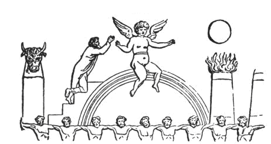
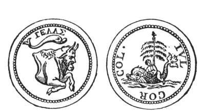
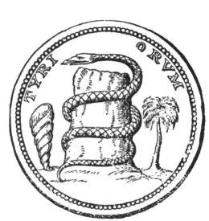
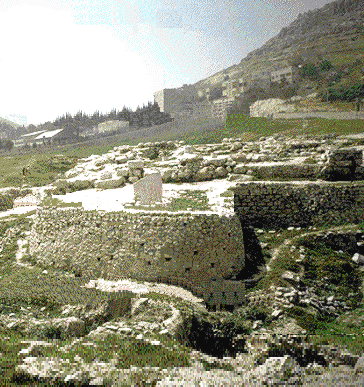
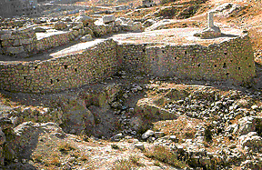

{kind=link}

*[Informace od Thóta]
„Baal“ znamená „Pán/Lord“. „Baal-Berith“ znamená „Pán/Lord Berith“. Věští
budoucnost, rozeznává minulost a dokáže proměnit kov ve zlato. Pomáhá ve vzestupu na vysoké pozice a získávat pocty. Mluví velmi zřetelně a má jemný hlas.
SIGIL
Baal-Bereth je otcem období Yule a Yule (Vánoc). „Vánoční stromek, který je dnes mezi námi tak běžný, byl stejně běžný i v pohanském Římě a pohanském Egyptě. V Egyptě byla tímto stromem palma; v
Římě to byla jedle. Palma označovala pohanského mesiáše, jako Baal-Tamara. Jedle ho označovala jako Baal-Beritha.“1
„Vánoční stromek, jak již bylo řečeno, byl v Římě obecně jiným stromem, dokonce i jedle; ale jednalo se o stejnou myšlenku, ať už se jednalo o palmu, nebo o vánoční jedli; která skrytě symbolizovala nově narozeného Boha jako Baal-Beritha, „Pána úmluvy“, a tím implikovala trvalost a věčnou povahu jeho moci, ne to, že poté, co padl před jeho nepřáteli, vítězně povstal a zvítězil nad nimi všemi.“ 2

V Egyptě uctívali Nimroda jako palmu a odkazovali na něj jako na mesiáše „Baal-Tamara“. Mezi nejstaršími z Baalů, byl známý jako Baal-Bereth, „Pán jedle“. Vyvinul se do podoby Baal-Beritha, „Pána úmluvy“. Ve starověkém Římě, kde také
uctívali jedli, mu říkali „Baal-Berith“.

25. prosinec se v Římě slavil jako den, kdy se vítězný Bůh znovu objevil na zemi, a konal se v Natalis invicti
solis, „Den narození nepřemoženého Slunce“. Vánoční kláda představuje mrtvé stádo Nimroda, známého jako Boha Slunce, ale pokáceného
jeho nepřáteli; vánoční strom představuje Nimroda - znovuzrozeného zabitého Boha.
Starobylý zvyk líbání pod větvičkou jmelí, známý druidům, pochází z Babylonu a představovoval mesiáše, „muže, který je ratolestí“. Jmelí bylo považováno za božskou větev - větev, která přišla z nebe a rostla na stromě, který
vyrůstal ze země. Nimrod, bůh přírody, byl symbolizován velkým strom. Protože však byl v době své největší slávy pokácen a zabit, byl nyní symbolizován jako strom bez větví, kterému se říkalo vánoční kláda. Pak přišel velký had a ovinul se kolem Nimroda (stromu bez větví).
Jako zázrakem se po boku seschlého stromu objevil nový strom, který symbolizoval Nimrodovo vzkříšení a vítězství nad smrtí. Zde je vyobrazení starověké efezské mince:

Baal-Berith byl známý také jako „Pán úmluvy“ a „Bůh Berith.“ Byl oblíbeným bohem a byl uctíván v Kanaánu, ve Philistii,
a Šekemu. Byl ochráncem smlouvy mezi
Šekemem a některými sousedními kenaanskými městy, která byla původně
nezávislá, ale nakonec si je podmanili
Hebrejci.
„Každý Izraelec, který by mohl bydlet v Šekemu, by byl jednoduše chráněným cizincem, a ne účastníkem úmluvy. Chrám
Baal-Beritha měl pokladnici, z níž občané odváděli příspěvky Abimelechovi. Právě tam se Gaal poprvé přihlásil jako vůdce
vzpoury a v jejím obvodu se obyvatelé věže
Šekemu („akropole“) našli dočasné útočiště před Abimelechem ke konci jeho povstání.“ 3
„Baal-Berith byl také známý jako „Bůh komunity“.
Níže jsou fotografie starověkých pozůstatků Baal-Berithova chrámu:
|  | 
Pozůstatky Baal-Berithova chrámu jsou zakulacené, plošina vyplěněná zemí, na níž kdysi stával mohutný chrám. Chrám je datován do 13./12. století př. n. l. Měřil 26 metrů na délku a 24 metrů na šířku a jeho stěny byly silné asi 6 metrů. „Archeologové se domnívají, že se jednalo o dvoupatrovou budovu. |
________________________________________
1 "The Two Babylons", Alexander Hislop 1858
2 Encyclopedia Biblica: A Critical Dictionary of the Literary Political and Religious History the Archeology Geography and Natural History of the Bible © 1899
3Tamtéž.
Ilustrace vzaté z knihy: "The Two Babylons", Alexander Hislop 1858
© Copyright 2005, Joy of Satan Ministries;
Library of Congress Number: 12-16457